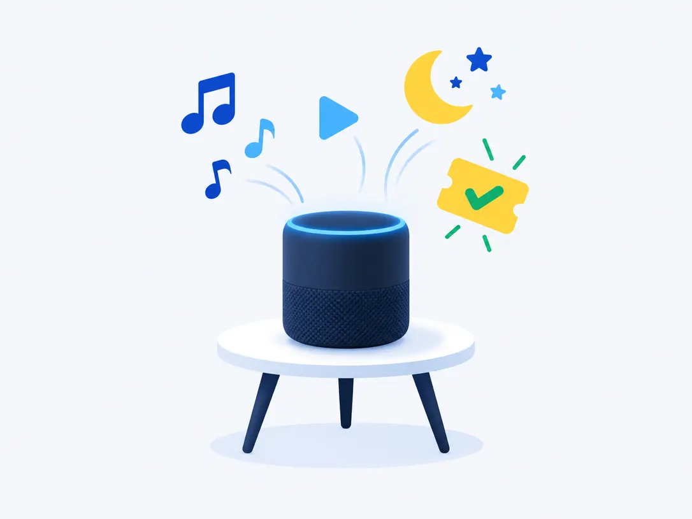
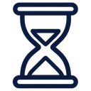

Яндекс Плюс
Музыка, сказки, Кинопоиск на Станции. Есть в Казахстане, официально 2 499 ₸ в месяц.
Чтобы Станция включала Яндекс Музыку, сказки и Кинопоиск, нужна подписка Яндекс Плюс. Без неё колонка тоже работает: отвечает на вопросы, ставит будильники, управляет умным домом.
Официально Плюс в Казахстане стоит 2 499 ₸ в месяц. У нас при покупке на [СРОК] месяц выходит [ЦЕНА/МЕС] ₸. Код приходит на страницу заказа через [N] минут после оплаты в Kaspi. Одна подписка работает на всех Станциях вашего аккаунта и ещё у трёх близких.
Опцию «Алиса Плюс» за 199 ₽ покупать не нужно: она продаётся только в России и Беларуси и для музыки не требуется.
Редакция Подпискомата · условия Яндекса проверены · наши цены — [дата]
С Плюсом Станция начинает включать музыку, подкасты, сказки и Кинопоиск на телевизоре. Всё остальное колонка умеет и без подписки: ответы на вопросы, таймеры, погода, умный дом и радио. Если вы пользуетесь только этим, платить не нужно.
Источник: справка Яндекса о Станции и alice.yandex.kz, проверено
Для колонки в Казахстане нужен обычный Яндекс Плюс. «Алиса Плюс» — отдельная опция поверх Плюса, и продаётся она только в России и Беларуси. «Подписка Алиса» — разговорное название, такого тарифа у Яндекса нет.
Музыка, сказки, Кинопоиск на Станции. Есть в Казахстане, официально 2 499 ₸ в месяц.
То же самое и сериалы Амедиатеки. 3 500 ₸ в месяц. Для колонки не обязателен.
Опция за 199 ₽ поверх Плюса: детские сценарии и родительский контроль. Только Россия и Беларусь.
Бывает у новой колонки и бесплатен, но с привязанной картой. После него спишется полная цена.
Итог: покупайте Яндекс Плюс. Ничего другого колонке в Казахстане не нужно.
Официальная цена Яндекс Плюса в Казахстане — 2 499 ₸ в месяц. Чем длиннее срок кода, тем дешевле выходит месяц. Цена одинаковая в любом городе Казахстана.
Рассрочка Kaspi: [условия из SSoT]. Сроки и цены берутся из одного источника и совпадают на всех страницах сайта.
Код нужно активировать на тот Яндекс ID, к которому привязана Станция. Частая ошибка: колонку настраивал муж, жена или ребёнок, а код ввели на свой аккаунт. Подписка есть, но Алиса её «не видит». Проверьте аккаунт колонки до активации.

Что будет с кодом, зависит от того, как оплачена текущая подписка. В одном случае код продлит её, в другом пойдёт параллельно, и вы заплатите дважды. Найдите свой вариант до активации.
Обычно он подключён с привязанной картой. Сначала отключите автопродление в профиле Яндекса, потом активируйте код. Иначе после подарочного периода спишется полная цена.
Код не сдвигает подписку оператора, а работает параллельно с ней (правила промокодов, п. 2.12.3). Отключите услугу у оператора, чтобы не платить дважды.
Код сдвинет следующее списание на свой срок (правила промокодов, п. 2.12.1). Ничего отключать не нужно.
После каждого шага указано, что вы должны увидеть. Если результат другой, остановитесь и откройте инструкцию по ошибкам активации.
Мы лучше скажем это до покупки, чем будем делать возврат после. Если узнали себя, подписка вам, скорее всего, не нужна или нужна не та.

Станция перестанет включать музыку, сказки и Кинопоиск. Ответы, будильники на стандартную мелодию, таймеры и умный дом останутся. Чтобы не было перерыва, активируйте новый код, пока текущий ещё действует: срок добавится.
Одна подписка работает на всех Станциях вашего аккаунта. Скажите «Алиса, запомни мой голос», чтобы рекомендации были личными. До трёх близких получают Плюс со своими аккаунтами.
Как подключить семьюСкажите «Алиса, переключись на казахский». Источник: alice.yandex.kz, проверено .
Четыре вопроса: страна аккаунта, есть ли подписка сейчас, кто пользуется колонкой, нужен ли подарок. В конце — один подходящий вариант.
Отдельной подписки на Алису нет, колонке нужен Яндекс Плюс. Официально он стоит 2 499 ₸ в месяц. У нас код на 12 месяцев стоит [ЦЕНА] ₸, это [ЦЕНА/МЕС] ₸ в месяц.
Да. Без Плюса Станция отвечает на вопросы, ставит будильники и таймеры, рассказывает погоду и управляет умным домом. Не будет Яндекс Музыки, сказок и Кинопоиска.
Нет. Одна подписка работает на всех Станциях, привязанных к вашему аккаунту.
Купите код Яндекс Плюс на нужный срок и оплатите в Kaspi. Код появится на странице заказа. Активируйте его на аккаунт, к которому привязана колонка.
К новой Станции бывает подарочный период. Он подключается с картой, и после него спишется полная цена, если не отключить автопродление. Ещё бывают акции самого Яндекса — их условия на сайте Яндекса.
«Алиса Плюс» — опция за 199 ₽ поверх Яндекс Плюса: детские сценарии и родительский контроль. Она продаётся только в России и Беларуси. Для музыки на Станции она не нужна.
Нет. В Казахстане продаётся только Яндекс Плюс, и колонке его достаточно. Если где-то предлагают «Алису Плюс» для Казахстана, уточните, что именно продают.
[Ответ после проверки на практике: Станция с российским аккаунтом, стоящая в Казахстане]
Регистрироваться не нужно: достаточно номера заказа. Срок гарантии: [из SSoT]. Когда замена невозможна: [исключения из SSoT].
Условия гарантии